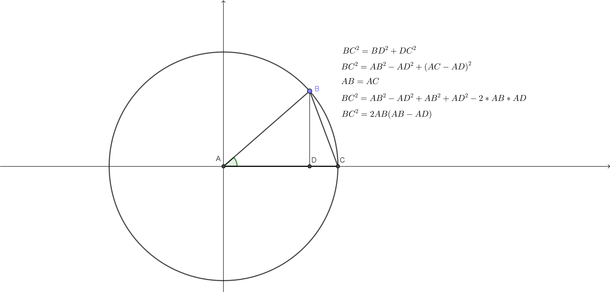

Kad cujemo rec trigonometrija, verovatno pomislimo na trouglove, dugacke izraze i nesto komplikovano i neupotrebljivo.
A da li je to zaista tako, ili se trigonometrija mozda moze posmatrati i na drugaciji nacin?
Naravno da moze! To cemo videti na ovoj prezentaciji.
Trigonometrija je jedna od najprimenjenijih grana matematike, a koristi se u arhitekturi, fizici, inzenjerstvu, tehnici i svim granama nauke koje koriste geometrijska izracunavanja.
Rec trigonometrija potice od grckih reci τριγονο, sto znaci trougao, i μετρειν, sto znaci merenje.
Kao sto samo ime kaze ona se bavi merenjem trouglova, ali ona moze da se posmatra i na krugove i uglove.
Prvi put u istoriji je zabelezena izmedju 1900. i 1600. godine, kada su njenu "proto" verziju koristili stari Egipcani da bi gradili piramide.
Da, trigonometrija je upotrebljivana cak tada, i pomocu nje sagradjene su poznate piramide koje pridadaju najvecim gradjevinama svih vremena.
Egipcani nisu imali sastavljenu celu trigonometriju kakvu danas poznajemo, ali koristili su njene delove kako bi opisali odnose u trouglovima kako bi gradili piramide.

Dakle, vec u tom periodu istorije, trigonometrija se koristila, mada Egipcani nisu racunali vrednosti funkcija uglova.Oni su je koristili da bi opisali odnose u trouglu.
Prvi koji su upotrebili trigonometriju za izracunavanje bili su Grci. Oni su prvi upotrebili funkcije za koje danas znamo.
Grcki matematicar Hipokrit posmatrao je tetive kruga i centalne uglove.
Hteo je da nadje duzinu tetive, ili osnovicu jednakokrakog trougla ako mu je poznat krak i ugao pri vrhu.
Pogledajmo sliku:
Pomocu Pitagorine teoreme, moze se naci tetiva BC kruga sa centrom u A poluprecnika AB.
To se moze uraditi samo sa poznatim poluprecnikom AB i duzi AD - normala iz C na AB.
Kako bismo nasli ovu duzinu ne moramo koristiti trigonometriju, ovde je upoptrebljena samo Pitagorina teorema.
Ali, na ovom primeru Grci su prvi put upotrebili oznake kosinus i sinus.
Pogledajmo kako su to uradili na sledecoj stranici.